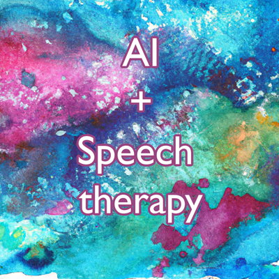

What does the future of AI look like in the speech therapy industry?
What it is:
- Aiding in session planning
- Simplifying documentation
- Intelligent scheduling
- Bridging language barriers
- Enhancing pronunciation and fluency analysis
- Deeper progress tracking
- Minimizing billing errors
- Evidence-based practice recommendations
- Assisting in communication (email, SMS)
What it isn't:
- "AI Speech Therapists" (replacement for professionals)
- Licensed or credentialed
- Evaluator or diagnostician
- A threat to SLP jobs
- Culturally responsive
AI streamlines and aids; it can't replace the speech therapist's core expertise and touch.